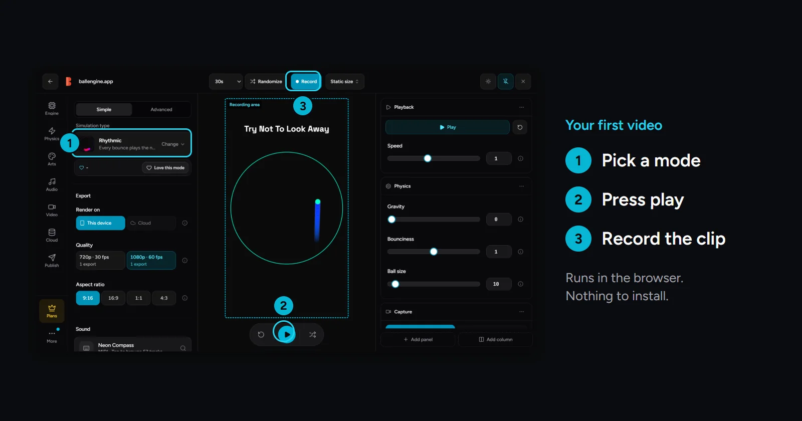
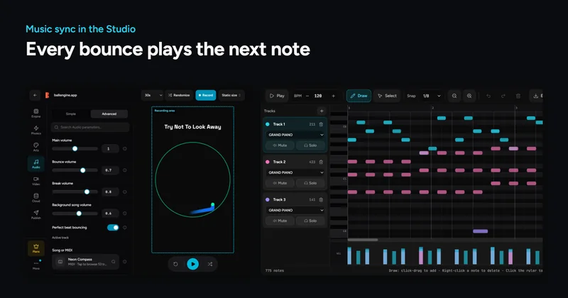
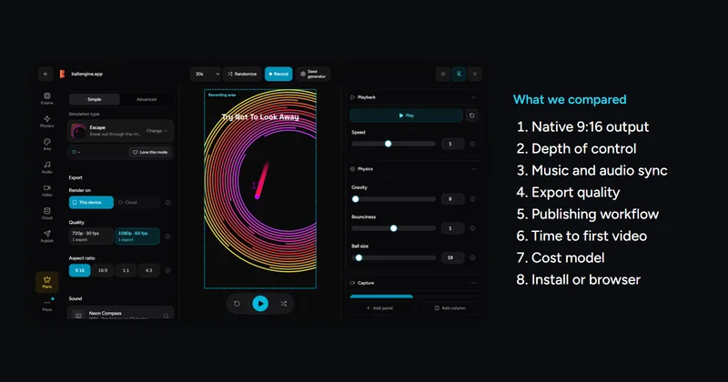

Getting Started With BallEngine Creator Studio: The Complete Beginner's Guide
New to BallEngine? This complete beginner guide walks you from opening the studio to publishing your first video, the interface, the core modes, physics parameters, music sync, recording, and export.

How to Use BallEngine: The Complete Beginner's Guide to Creator Studio
If you have ever scrolled past a hypnotic clip of a bouncing ball dodging through a spinning maze, filling a shape with color, or playing the notes of a song with every hit, you have already seen what BallEngine can do. The good news is that making those videos does not require an animation background, a video editor, or a single line of code. BallEngine is a browser-based physics simulation studio built specifically for creators who want satisfying, share-worthy short videos without the usual production overhead.
This guide is the onboarding manual we wish every new creator had on day one. We will walk you through what BallEngine is, what you can make with it, how the Creator Studio is laid out, the beginner-friendly modes worth starting with, the core physics parameters that shape every clip, how to sync your simulation to music, and finally how to record a vertical video and publish it straight to your favorite platform. By the end, you will have gone from never opening the tool to publishing your first video.
Key takeaways
- BallEngine is a zero-install, browser-based physics simulation studio. If you can open a website, you can use it.
- You need no coding, animation, or video-editing skills to make polished vertical videos.
- The core differentiator is music-synced simulations: with Rhythmic Mode, each bounce plays the next note of a song.
- There are 1,000+ editable physics parameters and dozens of modes, but a handful of beginner modes get you creating in minutes.
- You can record in 9:16 vertical video up to 4K/60fps and publish or schedule directly to TikTok, YouTube, Instagram, and more.
- It is free to start, and Randomize buttons help you discover great-looking clips fast.
What BallEngine Is and What You Can Make
BallEngine is a real-time physics playground designed for content creation. At its heart is a simulation canvas where balls bounce, collide, spawn, merge, and interact inside shapes you control. Every clip is driven by an actual physics engine, so the motion looks natural and satisfying rather than pre-animated or faked. You set up a scene, press record, and capture the result as a finished vertical video ready for social media.
The range of what you can make is wide. You can generate calming, satisfying videos of balls filling a container, tense clips of a single ball trying to escape a rotating enclosure, colorful chaos as hundreds of balls collide, or musical showpieces where the physics literally performs a song. Because it is a physics video generator built for short-form content, every scene is framed and sized for TikTok, Reels, and YouTube Shorts out of the box.
- Satisfying scenes: balls spawning and filling a shape, trails painting patterns, colors shifting over time.
- Tension clips: a ball racing to escape a shrinking or rotating container while viewers hold their breath.
- Music videos: simulations where each collision plays the next note of a melody, turning physics into a performance.
- Competitive scenes: balls racing, merging, or battling to a finish that keeps viewers watching to the end.
- Faceless content: you never have to appear on camera, record your voice, or reveal your identity.
BallEngine lets you publish faceless short-form content without editing or animation skills. The tool does the hard part; you bring the idea.
What You Need to Get Started (Just a Browser)
This is the shortest section in the guide, and that is the point. BallEngine runs entirely in your web browser. There is nothing to download, no software to install, no plugins to configure, and no hardware beyond the computer you already own. You open ballengine.app, and you are in the studio.
- A modern web browser: a current version of Chrome, Edge, Firefox, or Safari.
- No installation: the entire studio loads as a web app; there is nothing to set up.
- A free account: sign up to save your work, record videos, and publish. Getting started is free.
- Optional: headphones: helpful when you start working with music-synced modes and the Audio Studio.
Because everything lives in the browser, your workspace follows you. Sign in from a different computer and your save files and settings are right where you left them.
A Tour of the Creator Studio Interface
When you first open the studio, the layout can look busy, but it breaks down into a few clear areas. Once you know what each region does, the interface stops feeling intimidating and starts feeling like a control room. Here is the mental map to carry with you.
The Simulation Canvas
The canvas is the large central stage where your simulation plays out in real time. This is your video before it is a video. Everything you change in the panels around it updates here instantly, so you get immediate feedback on how a scene looks and feels. The canvas is framed in a vertical 9:16 aspect ratio because that is the shape of TikTok, Reels, and Shorts, so what you see is what you will publish.
The Mode Picker
Modes are the pre-built simulation types that define the fundamental behavior of your scene, such as whether balls spawn and fill a shape, try to escape a container, or play music as they bounce. The mode picker is where you choose your starting point. Switching modes is the single biggest change you can make to a scene, so this is usually the first thing you touch. We cover the beginner-friendly modes in detail below.
The Parameter Panels
Surrounding the canvas are the parameter panels, and this is where BallEngine's depth lives. There are 1,000+ editable settings organized into logical groups covering physics behavior, ball appearance, container shape, colors, trails, spawning, and more. You do not need to touch most of them to make a great clip. Beginners typically adjust a handful of core parameters, which we explain later in this guide, and let the defaults handle the rest.
The Randomize Controls
BallEngine includes Randomize controls that instantly shuffle settings to produce new looks. This is one of the best discovery tools in the studio. Instead of tweaking sliders blindly, you can randomize, watch what appears, and keep hitting it until something catches your eye. Then you refine from there. It is the fastest way for a beginner to learn what is possible.
The Audio Studio
The Audio Studio is where BallEngine's signature feature lives. This is where you load music, choose a musical scale or key, import MIDI files, and set up spatial audio so that your simulation can play a song as it runs. If sound is what sets your content apart, this is the panel you will spend the most time in. We walk through it in the music section below.
The Record Button
Finally, the record control captures your live simulation as a finished video file. When your scene looks the way you want, you press record, let the simulation run, and BallEngine encodes it as a vertical clip up to 4K resolution and 60 frames per second. From there you can download it or move straight to publishing.
You do not need to master every panel. You need to know which few controls change the feel of a clip, and let the studio handle the rest.
BallEngine Modes Explained
Modes are the heart of BallEngine. Each one is a different kind of simulation with its own rules, its own tension, and its own reason people keep watching. There are dozens of modes in total, but you do not need all of them to start. Below is a table of the most beginner-friendly modes and what each one is good for. Start with one, learn how it responds to changes, and branch out from there.
| Mode | What it does | Good for |
|---|---|---|
| Spawner | Balls spawn continuously and fill a shape or container. | The most intuitive intro; satisfying fill videos. |
| Escape | A ball tries to escape a rotating or shifting container. | Tension and suspense that holds viewers to the end. |
| Rhythmic | Each bounce plays the next note of a song. | Music-synced videos, the signature BallEngine look. |
| Breaker | A ball breaks through bricks or barriers as it moves. | Progress-driven, arcade-style satisfaction. |
| Drawer | Motion paints and draws patterns onto the canvas. | Artistic, generative visuals from ball paths. |
| Ghost Escape | An escape variant with a ghosting twist on the classic. | Fresh tension for viewers who have seen escape clips. |
| Spiral | Balls travel along or interact with spiral geometry. | Mesmerizing, geometric motion. |
| Plinko | Balls drop through a peg board into bins below. | Familiar, unpredictable, chance-based payoff. |
| Marble Run | Balls roll through a marble-run style course. | Long, journey-style clips with a clear finish. |
| Merge 2048 | Numbered balls merge into bigger values on contact. | Goal-driven scenes building toward a target. |
New to all of this? Start with Spawner for an easy, satisfying win, then try Escape for tension, and finally Rhythmic once you are ready to add music.
How to Choose Your First Mode
With so many options, the temptation is to jump between modes constantly. Resist that at the start. Each mode responds differently to the physics settings, so the fastest way to build real skill is to pick one, spend a few sessions with it, and learn how it reacts to changes in gravity, bounce, color, and container. Spawner is the recommended first stop because the cause and effect is easy to see: you can watch balls accumulate and immediately understand how each setting changes the fill. Once that clicks, everything else in the studio becomes easier to read.
A good progression for your first week is to make three or four clips in Spawner, then move to Escape to learn how a rotating container creates tension, then graduate to Rhythmic when you want sound. By the time you reach the music-driven modes, you will already understand the physics well enough to focus your attention on the melody rather than fighting the settings. If you want to see the full breadth of what the engine can do before committing, browse the modes from the ball simulator overview.
Your First Simulation in 7 Steps
Enough theory. Let's make something. This is a hands-on walkthrough that takes you from an empty studio to a recorded clip. Follow it in order the first time, and you will understand the core loop of BallEngine well enough to improvise afterward.
- Open the studio and sign in. Head to ballengine.app and create your free account so you can save and record. The studio loads right in your browser.
- Pick a beginner mode. Open the mode picker and choose Spawner. Balls will begin spawning and filling the shape on the canvas. Watch it run for a few seconds to get a feel for the motion.
- Hit Randomize a few times. Use the Randomize control to shuffle the look. Each press gives you a new color scheme, container, and behavior. Keep going until something catches your eye, then stop.
- Adjust a couple of core parameters. From the parameter panels, nudge gravity and bounciness to change the energy of the scene. Higher bounce feels lively; lower gravity feels floaty. Small changes have a big effect.
- Set your colors and trails. Choose a color scheme you like and turn on trails if you want flowing streaks of color. This is where a scene goes from plain to eye-catching.
- Frame and preview. The canvas is already 9:16 vertical, so make sure the action sits nicely inside the frame. Let the simulation run start to finish once to confirm you like the whole clip.
- Record and download. Press the record control, let the simulation play through, and BallEngine will capture it as a vertical video. When it finishes, download the file or continue straight to publishing.
That is the entire core loop: pick a mode, randomize, refine, record. Every advanced technique in BallEngine is a variation on those four moves. If you want more guided walkthroughs after this, the tutorials library goes deeper on individual modes and features.
Understanding the Key Physics Parameters
BallEngine exposes over a thousand settings, but you only need to understand a handful to control the feel of any clip. Think of these as the main dials. Learn what each one does, and you can shape almost any scene without getting lost in the deeper panels. Here are the categories that matter most for beginners.
Gravity
Gravity controls how strongly balls are pulled downward. It is one of the most powerful levers you have because it sets the overall energy and pace of a scene.
- Higher gravity: balls fall and settle quickly; the scene feels heavy, fast, and grounded.
- Lower gravity: balls drift and float; the scene feels dreamy, slow, and weightless.
- Zero or reversed gravity: creates surreal, otherworldly motion that stands out in a feed.
Bounciness (Restitution)
Bounciness, sometimes called restitution, decides how much energy a ball keeps after each collision. It is the difference between a lively, kinetic clip and a calm, settling one.
- High bounciness: balls keep their energy and ricochet for a long time; great for chaotic, high-motion scenes.
- Low bounciness: balls lose energy on impact and settle quickly; great for calm, satisfying fill videos.
- Bounciness pairs closely with gravity, so adjust the two together to dial in the exact feel you want.
Friction
Friction governs how much balls slow down as they slide against surfaces and each other. It shapes how quickly motion decays and how tightly balls pack together.
- High friction: motion slows fast; balls grip surfaces and stack neatly.
- Low friction: balls slide and keep moving; motion stays fluid and slippery for longer.
- Friction is subtle on its own but noticeable in fill and stacking scenes.
Ball Size and Count
How many balls you have and how large they are changes both the look and the performance of a scene.
- Fewer, larger balls: a cleaner, bolder scene that is easy to follow.
- Many small balls: dense, complex motion that reads as busy and mesmerizing.
- Ball count also affects spawn behavior in fill modes like Spawner, so experiment to find the density you like.
Trails
Trails leave a fading streak behind each ball as it moves, painting the path of the motion onto the canvas. They are one of the fastest ways to make a scene look polished and hypnotic.
- Long trails: flowing ribbons of color that fill the frame with pattern.
- Short or no trails: a cleaner, more literal view of the physics.
- Trails combine beautifully with color schemes to create generative art from simple motion.
Colors
Color is what makes a clip feel intentional rather than random. BallEngine lets you set color schemes for balls, trails, and backgrounds, and even shift colors over time. A strong palette is often the difference between a clip that gets scrolled past and one that stops the thumb.
Container Shape
The container is the shape that holds and constrains your simulation, such as a circle, polygon, or custom form. It defines the boundaries balls bounce against, and in modes like Escape it can rotate or change over time to create tension. Changing the container shape can completely transform a scene while leaving every other setting untouched.
Spawn Behavior
In modes where balls appear over time, spawn behavior controls how, when, and where new balls enter the scene. It determines the pacing of a fill and can make the difference between a scene that feels like a gentle trickle and one that feels like a downpour. Slower spawning gives each ball room to settle and reads as calm and deliberate; faster spawning creates dense, energetic accumulation. In fill modes especially, this is a setting worth experimenting with, because it directly shapes the rhythm of the whole clip.
Putting the Parameters Together
None of these dials work in isolation. Gravity and bounciness together set the energy. Friction and spawn behavior together set the pacing. Trails and colors together set the polish. When a scene does not feel right, it is usually because two of these are fighting each other, for example high gravity pulling balls down while high bounce keeps flinging them up. The fix is almost never a single extreme value; it is finding the balance between a small number of settings. Once you internalize that, you stop hunting through the parameter panels and start shaping scenes with intent.
A practical beginner rule: change one parameter at a time and watch the result. That is how you build an intuition for how gravity, bounce, and friction interact, instead of guessing.
Adding Music: Rhythmic Mode, MIDI, and Scales
This is the feature that sets BallEngine apart from every other ball simulator. In Rhythmic Mode, your simulation does not just make random sounds when balls collide. It plays music. Each bounce triggers the next note of a song, so the physics itself performs a melody. Done well, it is the most engaging content the tool can produce, because viewers stay to hear how the song resolves. If music-driven video is your goal, the music ball simulator experience is built for exactly this.
How Rhythmic Mode Works
When you switch to Rhythmic Mode, BallEngine maps a sequence of notes to the collisions in your scene. As each ball hits a surface, the next note in the sequence plays. The result is a simulation that sounds composed rather than chaotic, because the melody advances in time with the motion you see.
Importing MIDI and Choosing Scales
To control what song plays, head to the Audio Studio. There you can import MIDI files to bring in a specific melody, or select from musical scales and keys so that even randomly triggered notes stay in tune with one another. Working within a chosen scale means the sounds your simulation produces always feel musical, never off-key, even when the physics is unpredictable.
- MIDI import: bring in the notes of a specific song so your simulation plays that melody.
- Musical scales and keys: constrain notes to a scale so everything stays harmonious.
- Spatial audio: position sound in space so bounces feel like they come from where the action is.
- The Audio Studio: the central panel where you load, tune, and arrange all of the above.
If you want a full, dedicated walkthrough of building a music-synced clip from scratch, we wrote a companion guide: how to make a bouncing ball synced to music. It picks up exactly where this section leaves off.
Recording and Exporting Your 9:16 Video
Once your scene looks and sounds right, turning it into a publishable video is simple. BallEngine records the live simulation directly, so there is no separate rendering software and no export from a video editor. What you see on the canvas is what gets captured.
Resolution and Frame Rate
BallEngine captures in a vertical 9:16 aspect ratio, the native shape for TikTok, Reels, and YouTube Shorts. You can record at high resolution and smooth frame rates, up to 4K at 60fps, which keeps fast motion crisp and professional. Higher resolutions and larger export volumes are unlocked on the paid plans, while getting started and recording is free.
The Recording Workflow
- Get your scene exactly how you want it and let it run once to confirm the full clip works.
- Press the record control and let the simulation play through from start to finish.
- BallEngine encodes the run as a vertical video file.
- Download the finished clip, or continue directly into publishing without leaving the studio.
Because the recording is 9:16 and platform-ready, there is no cropping, resizing, or reformatting step. The file you get is built for the feed.
Publishing and Scheduling Your Video
BallEngine does not stop at recording. Publishing is built directly into the studio, so you can take a finished clip live without ever opening a separate app. This is a big part of what makes the tool a complete workflow rather than just a video maker, and it is especially handy for creators running a faceless YouTube channel or posting across several platforms at once.
Supported Platforms
You can publish and schedule directly to a wide range of short-form platforms from within BallEngine.
- TikTok
- YouTube (great for YouTube Shorts)
- Threads
- X
- Snapchat
Scheduling and Autopilot
Beyond one-off publishing, Creator and up include scheduling so you can queue content to go out later, and from the Pro plan upward a recurring Autopilot option for creators who want to keep a steady posting cadence without manual work each day. For anyone trying to grow consistently, this turns BallEngine into a set-and-post pipeline rather than a one-clip-at-a-time tool. If growth is your focus, our viral growth blueprint for satisfying content pairs well with the publishing tools here.
The practical upside of an in-studio publishing pipeline is consistency, which matters more than any single clip when you are building an audience. Short-form platforms reward creators who post steadily, and doing everything in one place removes the friction that usually breaks a posting habit: exporting a file, uploading it somewhere, writing a caption, and repeating that eight times across eight platforms. With scheduling and Autopilot, you can batch a session of clips, queue them across the platforms you care about, and let the cadence run while you work on your next batch.
Free to Pro: What Changes as You Grow
You can do the entire workflow in this guide on the free tier, which is the right place for every beginner to start. The paid tiers exist for when your ambitions outgrow the free limits rather than as a gate on the basics. As a rule of thumb, the things that scale with the paid plans are output quality and output volume, plus branding for creators building a recognizable channel.
- Free: everything you need to learn the studio, build scenes, and record your first videos.
- Lite: no watermark, 1080p recording and a commercial license, for one clean video every other day.
- Creator: every setting unlocked and enough exports to post every day.
- Pro: 3D settings, 4K and your own watermark text to make your content unmistakably yours; Elite and Agency add more exports and team seats.
The honest advice is not to think about tiers on day one. Make videos, find out whether this is a workflow you enjoy and want to scale, and upgrade only when you hit a limit that is actually slowing you down. The tool is designed so that a beginner never has to pay to prove the concept to themselves.
Beginner Tips and Common Mistakes
A few small habits will save you a lot of frustration and get you to good-looking clips faster. Here is what we tell every new creator.
- Do start with Randomize. It is the fastest way to discover looks you would never have dialed in by hand.
- Do change one parameter at a time. Adjusting gravity, bounce, and friction all at once makes it impossible to learn what each does.
- Do watch the whole clip before recording. Many scenes look great for five seconds and then settle or stall; catch that first.
- Do use save files. When you land on a look you love, save it so you can reuse and remix it later.
- Do not over-tweak. The defaults are strong. A great clip often needs only a mode, a color scheme, and one or two nudges.
- Do not ignore trails and color. These two settings do more for the polish of a scene than almost anything else.
- Do not skip the audio if music is your angle. A silent Rhythmic scene wastes the tool's best feature.
- Do not forget the frame. Keep the main action comfortably inside the 9:16 canvas so nothing important sits at the edges.
The creators who improve fastest treat every clip as an experiment. Randomize, keep what works, discard what does not, and save the winners.
Where to Go Next
You now understand the full arc of BallEngine: what it is, how the studio is laid out, which modes to start with, the core physics parameters, how to add music, how to record a 9:16 video, and how to publish it. The best next step is simply to make more clips, because fluency comes from repetition. When you want to go deeper, here is where to look.
- **Tutorials**: step-by-step walkthroughs for individual modes and features.
- **How it works**, a closer look at what powers BallEngine under the hood.
- **FAQ**: quick answers to the questions new creators ask most.
- **The best ball simulation software in 2026**, how BallEngine compares and where it shines.
- **Music-synced ball guide**, a dedicated deep dive into Rhythmic Mode.
Frequently Asked Questions
Do I need to install anything to use BallEngine?
Do I need coding or animation skills?
Is BallEngine free?
What can I actually make with it?
How do I add music to my simulation?
Can I publish directly from BallEngine?
What are save files?
What video quality can I record in?
Which mode should a beginner start with?
What if I do not know what settings to use?
Do I have to show my face or record my voice?
How long does it take to make my first video?
You have everything you need to make your first BallEngine video. The fastest way to learn is to open the studio and start experimenting, so create your free account and dive in. When you are ready to turn ideas into finished clips, the physics video generator is waiting, and your first satisfying, share-worthy video is only a few clicks away.
Modes in this article
All modes


Tutorials for this topic
All tutorialsPhysics Settings Deep Dive
Gravity, bounciness, speed, growth and arena resizing: what each physics setting does to a run, with the ranges you will find on the controls.
Optimising Clips for TikTok, Reels and YouTube Shorts
Framing, length, the opening seconds and the Studio settings that decide whether a vertical clip holds attention.
Building a Faceless Physics Content Channel
Choosing a format, building a repeatable production loop, and posting consistently without burning out.
Related articles
View all articles
How to Make a Bouncing Ball Video Synced to Music (Complete 2026 Guide)
Everything you need to make a bouncing ball that plays a song, how music-synced physics works, a full step-by-step BallEngine workflow, MIDI and scale tips, and how to publish.

The Best Bouncing Ball Simulators in 2026 (Tested & Compared)
A fair, in-depth comparison of the best ball simulation software for creators in 2026, features, music sync, export quality, learning curve, price model, and who each tool is really for.